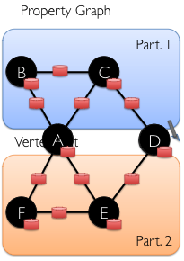
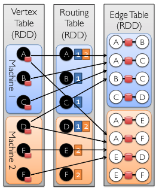

Trueno's Compute Server
The TruenoDB distributed computation server.
Trueno Compute Server relies on Spark Job Server, and GraphX.

Spark Job Server
The spark-jobserver provides a RESTful interface for submitting and managing Apache Spark jobs, jars, and job contexts [1].
Features
- "Spark as a Service": Simple REST interface (including HTTPS) for all aspects of job and context management.
- Supports sub-second low-latency jobs via long-running job contexts.
- Kill running jobs via stop context and delete job.
- Asynchronous and synchronous job API. Synchronous API is great for low latency jobs.
- Works with Standalone Spark as well as Mesos and yarn-client.
Spark Job Server Usage

GraphX
GraphX is Apache Spark's API for graphs and graph-parallel xcomputation.
Features [2,3]
- Flexibility: works with graphs and collections.
- Speed: comparable performance to the fastest specialized graph processing systems.
- A few built-in algorithms.
How GraphX works [2,3]
Property Graph
We can encode a property graph into VertexRDD and EdgeRDD.

Vextex Table (RDD), Edge Table (RDD), Routing Table

References
- https://github.com/spark-jobserver/spark-jobserver
- https://spark.apache.org/graphx/
- Gonzalez, J. E., Xin, R. S., Dave, A., Crankshaw, D., Franklin, M. J., Gonzalez, J. E., … Stoica, I. (2014). GraphX : Graph Processing in a Distributed Dataflow Framework. 11th USENIX Symposium on Operating Systems Design and Implementation, 599–613. Retrieved from https://www.usenix.org/conference/osdi14/technical-sessions/presentation/gonzalez